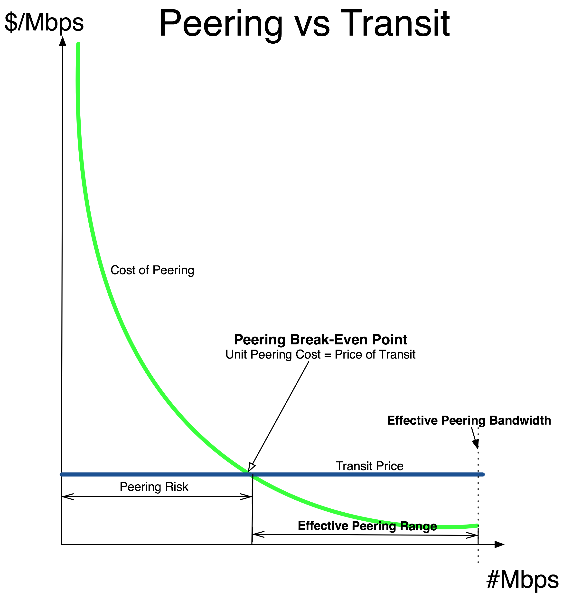
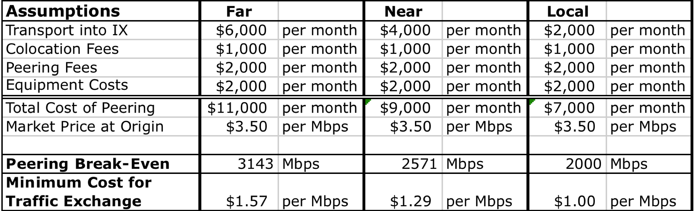

Peering vs. Transit Economics
Four key peering metrics describe the effectiveness of peering:
- The Peering Break-Even Point answers the question, “How much traffic do I have to peer for free to save enough money to cover the cost of peering?”
- The Effective Peering Bandwidth answers the question, “What is the maximum amount of traffic I can realistically push through the peering infrastructure?”
- The Effective Peering Range answers the question, “Where is the peering sweet spot – the peering bandwidth range where peering is financially rational?”
- The Minimum Cost for Traffic Exchange answers the question, “What is the best possible unit cost for peering?”
I will walk through each of these peering vs. transit calculations in turn.
The Peering Break-Even Point
To determine if peering makes sense, we need to identify the point at which the cost of peering equals the cost of transit. At this point, an ISP is financially indifferent between peering and simply sending that traffic through a transit provider. To calculate this metric, we first add the costs of peering and allocate those costs across the capacity of the peering infrastructure. The result is the curve in the Peering Break-Even graph shown in Figure 5-2.

Figure 5-2 The Peering Break-Even Point
In this graph we also plotted the cost of the next-best alternative for offloading that same traffic, the market price of Internet Transit. (We assume for simplicity that the price of transit is fixed, not tiered.)
The point at which these two lines intersect is called the Peering Break-Even Point.
Definition: The Peering Break-Even Point is the point at which the unit cost of peering exactly equals the unit price for Internet Transit.
To calculate the Peering Break-Even Point, we allocate the monthly costs of peering across the market price for transit.
PeeringBreakEvenPoint = MonthlyCostofPeering/UnitPriceofTransit
Beyond the Peering Break-Even Point (see Figure 5-2), the ISP peers more than enough traffic to completely cover the cost of peering. The monthly transit bill is lowered more than the total cost of peering.
Savings = (MbpsPeered-PeeringBreakEvenPoint)*MarketTransitPrice
To the left of the Peering Break-Even Point is an area I call “Peering Risk.” The risk here is of not peering enough traffic for free to offset the monthly cost of peering. When the unit price of transit is less than the unit cost of peering, peering does not provably make financial sense. This situation is where many of the smaller ISPs find themselves today.
The Peering Break-Even Point helps make the business case for peering objective and clear – if an ISP can peer more traffic than indicated by the Peering Break-Even Point, then the ISP should prefer to peer instead of solely purchasing transit from an upstream ISP.
Application of the Peering Break-Even Point
Let’s continue with our previous example and further assume that the market price for Internet Transit is $3.50 per Mbps.
From a strictly financial position, peering makes sense when the unit cost of peering is less than the cost of transit; that is, when more than $11,000/$3.50 = 3,143Mbps can be peered at this exchange point (Table 5-3).
Remember the context – in this example, the prospective peer is building into the IXP from across a continent. The Peering Break-Even Point is lower for those who are “near” or “local” to the IXP, as shown in the other columns in the spreadsheet.
We are also assuming that the ISP is not already present in the colocation space. If the ISP already has a Point of Presence (POP) there, the business case for peering is much easier to make.
Table 5-3. The break-even analysis with different transport costs into the IXP.

Effective Peering Bandwidth
How much traffic can I send over the peering infrastructure?
Definition: The Effective Peering Bandwidth is the maximum amount of traffic that can be safely transported (without packet loss) across peering infrastructure.
The general rule is that the Effective Peering Bandwidth is about 70% of the smallest-sized physical layer capacity in the path to the peer. This rule accounts for framing overhead, some need to burst, and the sinusoidal nature of Internet traffic. So for these sample calculations, we assume that we can maximally use about 7Gbps of the 10Gbps capacity. This assumption seems to resonate with the peering coordinator community.
Effective Peering Bandwidth = 70% * 10Gbps = 7000Mbps
So when modeling using the service, one should not expect to be able to use more than 70% of the peering capacity.
Minimum Cost for Traffic Exchange
What is the lowest cost for peering?
Definition: The Minimum Cost for Traffic Exchange is the lowest unit cost obtainable in a peering infrastructure deployment.
To calculate the lowest cost for traffic exchange, we simply divide the monthly cost of peering by the Effective Peering Bandwidth.
MinimumCostofTrafficExchange=MonthlyCostofPeering/Effective PeeringBW
In the best-case scenario we can use all of the effective peering bandwidth for our peering traffic exchanges with peers. Some would call this “running the peering interconnect hot.”
At this maximum utilization point, peering can cost about $1.57/Mbps:
MinimumCostofTrafficExchange=$11,000/7,000Mbp = $1.57/Mbps
This metric helps us identify if peering is even interesting. Will peering save enough money to be worth the effort?
Effective Peering Range
With the analysis we have done, we proved that peering makes sense financially if you can peer more traffic than the Peering Break-Even Point, and that we can peer up to the Effective Peering Bandwidth.
Definition: The Effective Peering Range is the range of peering traffic exchange that makes sense financially.
The Effective Peering Range is the “Sweet Spot,” or to use an aircraft analogy, the landing strip that a peering coordinator must land on to save the company money by peering. It is measured as a range (in Mbps) between the Peering Break-Even Point and the Effective Peering Bandwidth.
Tracking Peering Effectiveness
After the business case has been approved and executed, this story suggests that the peering analysis should be on-going and adjusted based on market criteria.
Notes from the field.
Periodically Review Peering Analysis
At an early Gigabit Peering Forum, Bryan Garrett (BellSouth at the time) shared a good process tip. After the business case is made and accepted, it is a good idea to bring forward quarterly updates applying the same logic, terminology, and metrics. Peering can be a provably valuable alternative to simply purchasing transit, and it is important to track whether it remains a good strategy given the market price for transit.
Peering Workshop Practice Questions
Here are a few practice questions from the Internet Peering Workshop:
1. What is the monthly bill if you buy 1.5Gbps of transit at $2/Mbps and also peer 1Gbps at an IXP with a monthly peering cost of $5000/month?
2. You have 5Gbps of video traffic to push and your price of transit is $2/Mbps with a 2G commit. Does it make sense to build into the Michuki Internet Exchange (aka “The MIX”) if the circuit in costs $3000/month, colocation costs $1000/month, the 10Gbps peering port costs $3000/month, and you think you can peer away 2Gbps for free at the IXP?
3. You have 6Gbps of video traffic to push, and you have just started a two-year contract in which you pay transit fees of $2 per Mbps with a 2G commit. Does it make sense to build into the K-Rose Internet Exchange (aka “The KRIX”) if you can peer 2Gbps, with the only cost being port costs of $2500/month for a 10G port?
4. What is the effective peering range for question 1 if the peering infrastructure is a 10G Ethernet?
Answers to these questions are in the answer key in the back of the book.